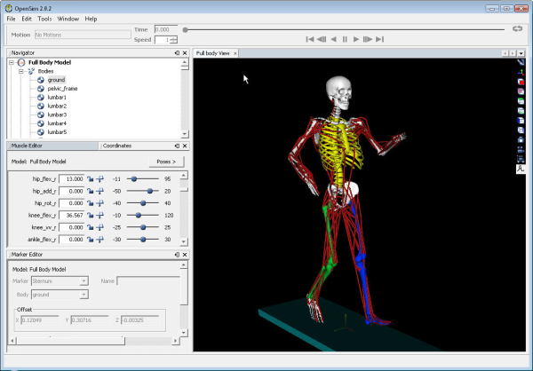
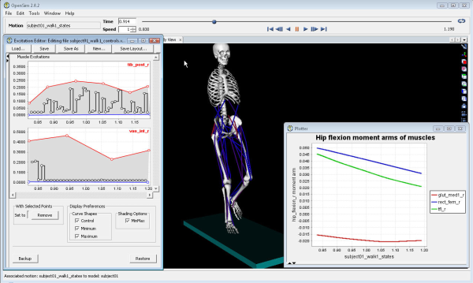

Ayman Habib (pictured, right) is a software engineer working for the Neuromuscular Biomechanics Lab (led by Prof. Scott Delp) and a staff member of the National Center for Biomedical Computation at Stanford University.
His main job in the lab is writing and supporting the code used by researchers and students, to perform modeling and simulation of the musculoskeletal system, known collectively as OpenSim, and also disseminating the software to make it available to students and researchers elsewhere. Ayman is the lead developer of the OpenSim User Interface; in addition he supports the user community, and participates in the design and development of a (C++) API to increase the utility of the software. He has been programming for more than 20 years and has a Ph.D. in Computer Science from Rice University.
In a nutshell, what is OpenSim?
OpenSim is a set of tools that enable users to develop models of musculoskeletal structures, build and refine simulations that utilize these models and analyze the results of these simulations to gain insight into muscle function and other aspects of the musculoskeletal system. The models built using OpenSim range in complexity from simple models used for educational purposes to subject specific models of humans with movement disorders. OpenSim has also been used to model animals, robots and orthotics.
The OpenSim application is the Graphical User Interface that sits on top of the modeling and simulation tools to make them accessible to a wide spectrum of users.

How long has it existed, how did it initially come about, how has it been funded and developed?
It started by an initiative from the NIH (National Institute of Health) to launch a set of National Centers for Biomedical Computation. Stanford won the national competition to host the center supporting Physics Based Simulation of Biological Structures (Simbios) and secured the grant in 2004. NIH continues to fund the center. OpenSim is one of the projects supported by this center.
It seems to be very widely used. Can you say something about what kind of users it has, how many, and what users have found to be of particular interest in the application, as well as compared to its competing products?
OpenSim caters to a variety of users from students (as a teaching tool in biomedical/mechanical engineering departments and in some medical schools), to researchers performing cutting edge research in movement science, rehabilitation, and design of orthotics. It is also used by some clinicians in gait labs studying gait-abnormalities.
The first public release of OpenSim was in Aug. 07, since then we have added more than 4500 new users and growing strong.
Users like the intuitive Graphical User Interface:

They also like the extensibility of the system, so that they can add their own modeling objects & analyses and also availability of the latest algorithms used to produce some of the most accurate simulations around.
The main competing products in this area are proprietary and commercial so users can’t have access to the algorithms used in order to validate them and can’t plug in their own to experiment with new ideas/algorithms. Many competing products come from makers of motion capture systems, so they have different priorities.
What are some of the main technical challenges that OpenSim has had to deal with?
One of the main technical challenges to OpenSim is the wide spectrum of users from high school kids learning the basics to involved researchers who would want to have access to and be able to modify core algorithms to fit their needs.
That's where a modular architecture as the NetBeans Platform comes in handy, as you can envision multiple products building on a shared set of modules targeting users at different levels. Because the OpenSim API layer and supporting libraries have been evolving over the last couple of years, we have not had the chance to leverage the NetBeans Platform as much as I'd like, but we’re moving in this direction and so the vision is starting to materialize.
Looking under the hood, what are the main libraries/frameworks/languages/etc used by OpenSim, i.e., what are its technical specifics?
The OpenSim application is built on top of a stack of C++ libraries developed under the SimTK project (htttp://simtk.org) to perform neural/musculoskeletal modeling, multibody dynamics, and numerical methods. We use SWIG for wrapping to call these libraries from Java. OpenSim also uses VTK for 3D visualization, JFreechart for plotting and is built on top of the NetBeans Platform.
When and how was the decision made to use the NetBeans Platform?
When I started writing the GUI for OpenSim in 2005, the NetBeans Platform was not available as a solid platform for writing Java applications as it is today, and I looked around for existing Java & Cross-platform C++ frameworks but didn’t find something that fits our needs (I didn’t want to use Eclipse since I wanted to stay with Swing rather than use SWT for easier integration with other tools), so I started to write my own framework, and I got something going quickly, but the progress was slow as there was so much code that I had to write and document to enable modular/collaborative development which has always been the vision for OpenSim.
Then a colleague came on board around the time when NetBeans 5.0 became available and started using it as an IDE for development. That’s when we took a serious look into the NetBeans Platform, and then the switch was an easy decision, since I found so many issues that I had been thinking about being built into the platform (e.g., modules/plugins, windows management and docking, Matisse to begin with).
The switch over took less than a couple of months and it’s been reassuring to see our needs being met by the NetBeans Platform since then. (Here is our NetBeans Platform related Wiki.)
How has it been to learn to use the NetBeans Platform and do you have any tips and tricks to share about the NetBeans Platform?
Starting up was not hard as there were many tutorials and code examples to begin with. I have also used the user forum a few times and it continues to be a great resource for me. The book “Rich Client Programming: Plugging into the NetBeans Platform” has also been helpful as a backup plan for things I couldn’t find elsewhere.
One tip that I found useful (especially because we do not expose the Plugin Manager as of yet) is that we can distribute modules as NBM files and that they get installed automatically if the users put those NBM files in a directory (update/download/) below our “cluster” directory. I have used this a few times to deliver special purpose modules and was impressed by how smoothly that went.
Anything else you'd like to say?
Well, keep up the good work, it’s been a great ride so far and I’m excited about the opportunities that are opening up for us and for the biomechanics community at large through the use of the NetBeans Platform. I'd also want to acknowledge the collaborative effort behind OpenSim, including the great body of work provided by the simtk staff and many current and former members of the NMBL lab at Stanford along with our funding sources at the NIH (Roadmap for Medical Research, Grant U54 GM072970). Thanks.